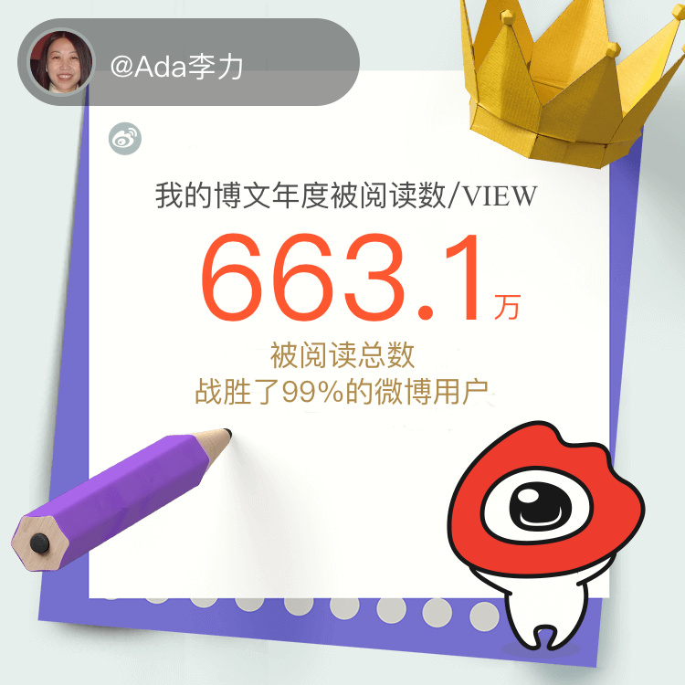

#我在微博的2016#发微博数不够，不到及格线，微博上50%的人都比我发得多；被互动数尚可，战胜81%；阅读数有些惊人，战胜99%的用户？--- 这三个数据有些理解不了。想知道你今年的个人影响力如何，快戳链接：网页链接 
节前的味道。- 早上本来想打车去见个人，滴滴呼叫两次出租无人应，只好开车去。- 车上面厚厚一层灰，玻璃水也没有了。回途路上去洗车，发现办卡的洗车店关门了。- 同事今天中午订餐没送到，只好去楼下超市买方便面，提醒我们接下来三天要自己带饭，因为超市也要关门，可能方便面都买不到。- 明天起，北京同事陆续有人回家乡。- 姐姐弟弟在群里发奔赴旅游地的照片。我才发觉自己连年夜饭和春节几天上哪儿玩都还没筹划。
去年税收得比前年多。减税是笑话。@刘芮东:财政部公布，去年1-12月全国一般公共预算收入159552亿元，比上年增长4.5%，增速为1988年以来新低。作为主要税种，国内增值税在1-12月累计收入40712亿元，同比增长30.9%，其中改征增值税增长2.7倍（1-5月增长33%，全面推开营改增试点后的6-12月增长4.5倍）；营业税11502亿元，同比下降40.4%（1-5月增长37.3%，6-12月下降95.9%）。主要是全面推开营改增试点后，原营业税纳税人改缴增值税形成收入转移，体现增值税增收、营业税减收。